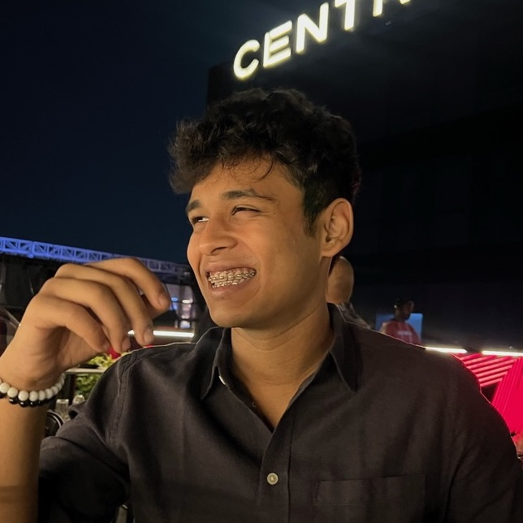

100
Hi, I'm a junior Computer Science major at SVKM's NMIMS University, Mumbai. The profound impact of computer science on billions of lives, coupled with its diverse applications tailored to individual needs, ignited my passion for pursuing studies in this field.
I'm interested in Computer Vision specifically in Autonomous Systems (driving) and Natural Language Processing. My hobbies include learning about urban design and city planning and video games